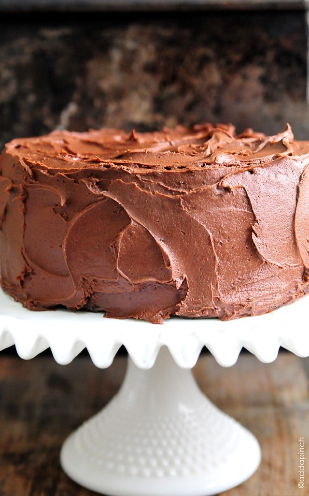

Chocolate Cake Recipe

Description
The Best Chocolate Cake Recipe in the world! A one bowl chocolate cake recipe that is quick, easy, and delicious!
It's a pretty bold claim. The best chocolate cake recipe ever? Through years of experimentation, feedback and evaluation, this recipe has been perfected.
Just one bite of this decadent, moist chocolate cake with chocolate frosting will get you hooked. For it to unanimously be the best ever, there must be evidence through a large sample-size.
Thousands of people have delivered positive feedback and many said this was the best chocolate cake they’d ever tasted!
Cake has long been a delicious treat and dessert across the world. Of all the cake flavors, chocolate cake is one of most popular and most loved.
It’s just simply because the best of both worlds are – cake and chocolate – can be found in this delightful baked product. Now let's show you how to create the perfect chocolate cake.
Ingredients
For this cake, you'll need the following ingredients.
- 2 large eggs
- 1 cup milk
- 2 cups all-purpose flour
- 3/4 cup unsweetened cocoa powder
- 2 teaspoons baking powder
- 1 1/2 teaspoons baking soda
- 1 teaspoon salt
- 1 teaspoon espresso powder
- 1 cup boiling water
- 1/2 cup vegetable oil
- 2 teaspoons vanilla extract
- Chocolate Buttercream Frosting Recipe
Instructions:
Preheat the oven:
Preheat the oven to 350F. Prepare two 9-inch cake pans by spraying them with baking spray or buttering and lightly flouring.Add the ingredients:
Add flour, sugar, cocoa, baking powder, baking soda, salt and espresso powder to a large bowl or the bowl of a stand mixer. Whisk through to combine. Stir for several minutes until it is combined well.- Add milk, vegetable oil, eggs, and vanilla extract to the flour mixture and mix together on medium speed until the batter is well combined.
Reduce the speed and carefully add the boiling water to the cake batter. Mix thoroughly until the batter is well combined.
Place in the oven:
Distribute the cake batter evenly between the two prepared cake pans. Bake for 30-35 minutes.
You can get an indication by placing a toothpick in the center of the cake and checking if it comes out clean.Remove from the oven and serve:
Remove from the oven carefully and allow the cake to cool for about 10 minutes, remove the pan and cool completely. Lastly, frost the cake with Chocolate Buttercream Frosting.